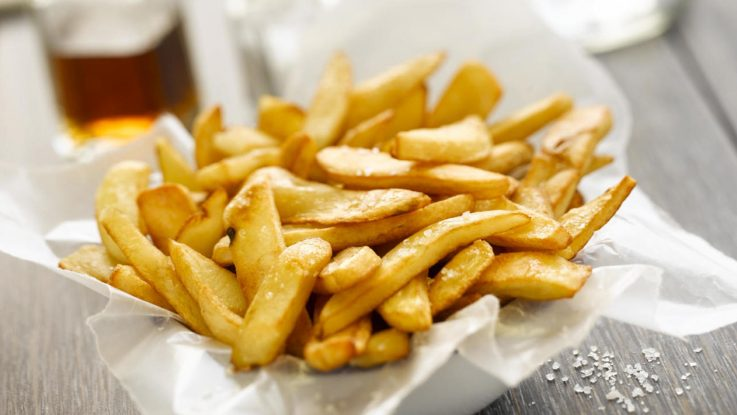

Recipe of Fried Potato homemade

Ingredients
3 or 4 potatos
Oil
Salt
Elaboration. Steps
Peel the potatoes
Cut in batons
To warm the oil in the frying pan
Cook until golden
Remove them of the oil and sauté them to taste